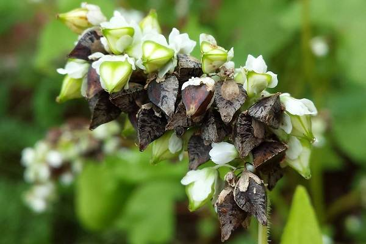

Последние новости в мире гречки
Включать гречку в ежедневное меню можно. Во-первых, гречневая каша практически безвредна: она разрешена в большинстве лечебных диет (в том числе при желчекаменной болезни или язве желудка). Во-вторых, это медленный углевод, который обеспечит чувство сытости не меньше, чем на два-три часа. По питательности гречневая каша близка к гороховой, хотя и менее калорийна (если вы варите ее на воде, она составит всего 120 килокалорий на 100 граммов). Так что гречка в рационе незаметно снизит количество ваших перекусов — аппетит станет меньше. За счет этого реально снизить вес примерно на 800 граммов — 1 килограмм за неделю. Кроме того, гречка уменьшает содержание сахара в крови (у крупы низкий гликемический индекс).
100 граммов гречки покрывает до трети дневной потребности в клетчатке. Клетчатка — это пищевые волокна, которые улучшают работу кишечника, поскольку "связывают" токсины и удаляют их из организма. Больше всего клетчатки в гречке-ядрице, цельной нераздробленной крупе. Продел — то есть мелко или крупно расколотые зерна — обладает меньшим количеством таких волокон и менее полезен.
По набору полезных веществ гречка превосходит многие продукты питания: например, в ней содержатся никотиновая кислота, витамины группы B и C. Есть фолиевая кислота и соли железа, которые помогают при железодефицитной анемии. Крупа богата магнием, который устраняет отечность конечностей. Однако магний — это причина, по которой гипотоникам не рекомендуют есть гречку в больших количествах: он расслабляет стенки сосудов, что может привести к понижению давления. Впрочем, следует помнить, что лечиться кашей — плохая идея. Каждый день гречку есть можно, но полноценной заменой медикаментам, выписанным по рецепту врачу, она, как и любой другой продукт питания не является, и являться не может.
Фотографии гречки
Факты про гречку
Гречка является частью национальной кухни Японии. Именно там из гречки производят гречневую лапшу «соба», которая пользуется популярностью в многочисленных ресторанах Японии.
Гречка улучшает сон. Поэтому именно гречишной шелухой наполняют специальные подушки от бессонницы